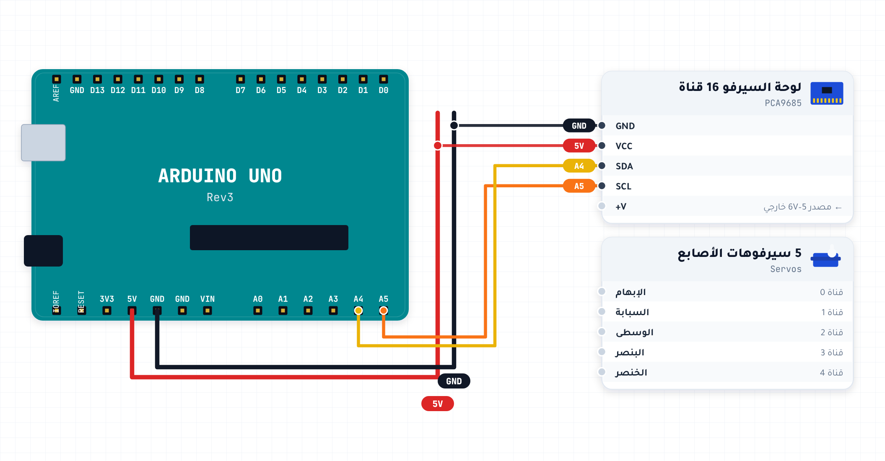

▶فيديو الشرح
خمسة سيرفوهات تسحب أوتاراً تشبه العضلات فتنثني الأصابع، عبر لوحة PCA9685 ذات 16 قناة.
1المكونات
ARDUINO UNOboardلوحة السيرفو 16 قناةPCA96855 سيرفوهات الأصابعServosأسلاك توصيلJumper Wiresلوحة تجاربBreadboard
2مخطط التوصيل

اضغط على المخطط لتكبيره · نسخة SVG عالية الدقة
| القطعة | الطرف | يوصل إلى |
|---|---|---|
| لوحة السيرفو 16 قناة | GND | GND |
| لوحة السيرفو 16 قناة | VCC | 5V |
| لوحة السيرفو 16 قناة | SDA | A4 |
| لوحة السيرفو 16 قناة | SCL | A5 |
| لوحة السيرفو 16 قناة | V+ | مصدر 5–6V خارجي |
| 5 سيرفوهات الأصابع | الإبهام | قناة 0 |
| 5 سيرفوهات الأصابع | السبابة | قناة 1 |
| 5 سيرفوهات الأصابع | الوسطى | قناة 2 |
| 5 سيرفوهات الأصابع | البنصر | قناة 3 |
| 5 سيرفوهات الأصابع | الخنصر | قناة 4 |
3الكود
المكتبات المطلوبة (من Arduino IDE ← Sketch ← Include Library ← Manage Libraries):
- Adafruit PWM Servo Driver Library
/* المستوى المتطور — المشروع 7: اليد الروبوتية الحيوية ذات التحكم الوتري كتاب: 38 مشروع في شهر — لؤي النصري (@robotlouay) المكتبة: "Adafruit PWM Servo Driver Library" التوصيل: لوحة PCA9685 (16 قناة): SDA → A4 SCL → A5 VCC → 5V GND → GND V+ (طرفية الطاقة الخضراء) ← مصدر خارجي 5–6V (3A على الأقل) السيرفوهات: الإبهام → قناة 0 ، السبابة → 1 ، الوسطى → 2 ، البنصر → 3 ، الخنصر → 4 الأوامر من Serial Monitor (9600): o فتح ، c قبضة ، p التقاط بإصبعين ، v علامة النصر 1..5 ثني/فرد إصبع واحد */ #include <Wire.h> #include <Adafruit_PWMServoDriver.h> Adafruit_PWMServoDriver pwm = Adafruit_PWMServoDriver(0x40); const int FINGERS = 5; const int SERVO_MIN = 120; // نبضة 0° (عدّلها بعد المعايرة) const int SERVO_MAX = 500; // نبضة 180° const int OPEN_DEG[FINGERS] = {20, 10, 10, 10, 10}; // الإصبع مفرود const int CLOSE_DEG[FINGERS] = {150,170,170,170,170}; // الإصبع مثني (الوتر مشدود) int current[FINGERS]; bool bent[FINGERS] = {false}; void setFinger(int f, int deg) { current[f] = deg; pwm.setPWM(f, 0, map(deg, 0, 180, SERVO_MIN, SERVO_MAX)); } void pose(const bool closeMask[FINGERS]) { // حركة متزامنة وناعمة لكل الأصابع int target[FINGERS]; for (int f = 0; f < FINGERS; f++) { target[f] = closeMask[f] ? CLOSE_DEG[f] : OPEN_DEG[f]; bent[f] = closeMask[f]; } for (int step = 0; step <= 30; step++) { for (int f = 0; f < FINGERS; f++) { int a = current[f] + (target[f] - current[f]) * step / 30; pwm.setPWM(f, 0, map(a, 0, 180, SERVO_MIN, SERVO_MAX)); } delay(15); } for (int f = 0; f < FINGERS; f++) current[f] = target[f]; } void setup() { Serial.begin(9600); pwm.begin(); pwm.setPWMFreq(50); // السيرفو يعمل بتردد 50Hz for (int f = 0; f < FINGERS; f++) setFinger(f, OPEN_DEG[f]); Serial.println("Commands: o c p v 1-5"); } void loop() { if (!Serial.available()) return; char c = Serial.read(); const bool OPEN[] = {0,0,0,0,0}; const bool FIST[] = {1,1,1,1,1}; const bool PINCH[] = {1,1,0,0,0}; const bool VICTORY[] = {1,0,0,1,1}; switch (c) { case 'o': pose(OPEN); break; case 'c': pose(FIST); break; case 'p': pose(PINCH); break; case 'v': pose(VICTORY); break; default: if (c >= '1' && c <= '5') { int f = c - '1'; bool m[FINGERS]; for (int i = 0; i < FINGERS; i++) m[i] = bent[i]; m[f] = !m[f]; pose(m); } } }
هذا المشروع يعتمد على مكتبات أو لوحات غير متوفرة في mBlock 5، لذلك نستعمل Arduino IDE. انسخ الكود من تبويب Arduino IDE.
4كيف يعمل؟
- PCA9685 تتحكم في 16 سيرفو عبر سلكين I2C
- كل قناة تحرك إصبعاً
- أوامر جاهزة: فتح، قبضة، التقاط، نصر
- مصدر 5–6V خارجي للسيرفوهات
⚠ قبل توصيل الكهرباء: راجع كل سلك مع الجدول أعلاه، وتأكد من عدم وجود تماس بين 5V و GND. اختر اللوحة والمنفذ الصحيحين من قائمة Tools في Arduino IDE.